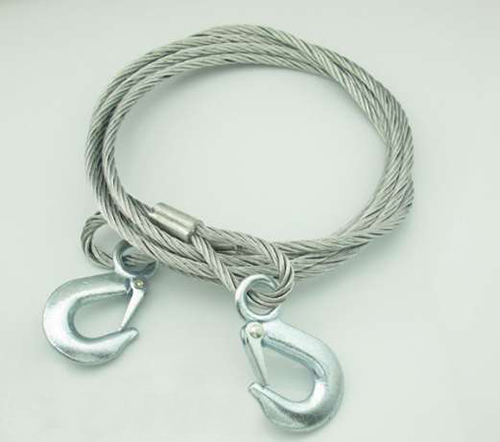
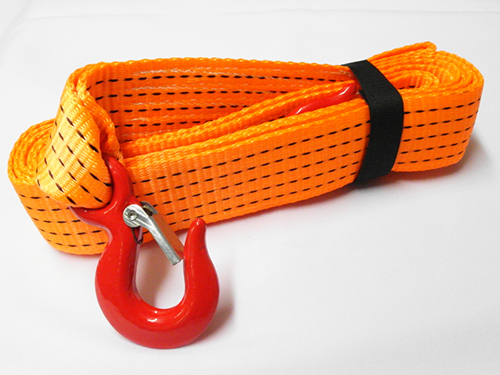
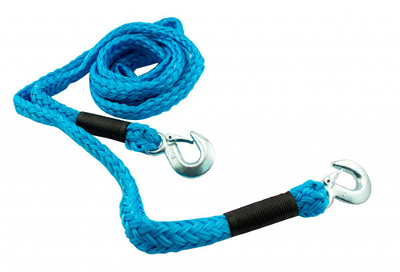

Как выбрать буксировочный трос
Как выбрать буксировочный трос — основные моменты, на которые следует обратить внимание.
1. Длина. Буксировочный трос должен иметь длину не менее 4-х метров, можно 6, но не 2 и не 3. Такая длина является безопасной для буксирования и прописана в ПДД. Короткий буксировочный трос может привести к столкновению буксирующего и буксируемого автомобилей.
2. Материал. В продаже существуют изделия различных типов, среди них есть металлические тросы, а также тканевые буксировочные тросы или как их еще называют "галстуки".
{kind=link}

Металлический буксировочный трос
Некоторые автомобилисты утверждают, что металлический трос более надежен и к тому же способен выдержать большую нагрузку по сравнению с тканевым. Возможно, так оно и есть, однако для буксирования среднестатистической "легковушки" более чем достаточно будет тканевого троса.
К тому же металлический трос со временем подвержен коррозии, он более жесткий и требует много места, треснувшие пучки могут серьезно поранить руку и доставить много неприятностей.
{kind=link}

{kind=link}

Тканевый трос (косичка)
Именно поэтому я бы рекомендовал выбирать тканевый трос для буксировки, он очень компактный, в свернутом состоянии занимает минимум места. К тому же, его тяговые характеристики не уступают металлическим аналогам, а в случае его разрыва он не причинит вреда вашему автомобилю или тому, кто будет вас буксировать.
3. Максимальная нагрузка. Выбирая буксировочный трос, обратите внимание на максимальную нагрузку. Руководствоваться нужно массой автомобиля, если автомобиль весит 2 тонны, то максимальная нагрузка должна быть как минимум 3 000 - 4 000 кг. Лучше выбирать с запасом, поскольку в дороге вам может понадобиться буксировать более тяжелый автомобиль.
{kind=link}
4. Крепление троса для буксировки. Примитивные крепления выполнены в виде петель. Здесь, как говорится, нужна сноровка, некоторые не могут закрепить эти петли, некоторые говорят о том, что они перетираются через некоторое время. Более надежным и простым в использовании считается буксировочный трос с металлическими крюками на концах. Они довольно быстро крепятся и отличаются высокой прочностью. Благодаря специальным фиксаторам крюки не соскочат во время буксировки.
На этом у меня все. Уверен, что следуя данным рекомендациям, вы сделаете правильный выбор и сможете купить надежный буксировочный трос, который всегда выручит в сложной ситуации.
По материалам сайта : http://avtopulsar.ru/